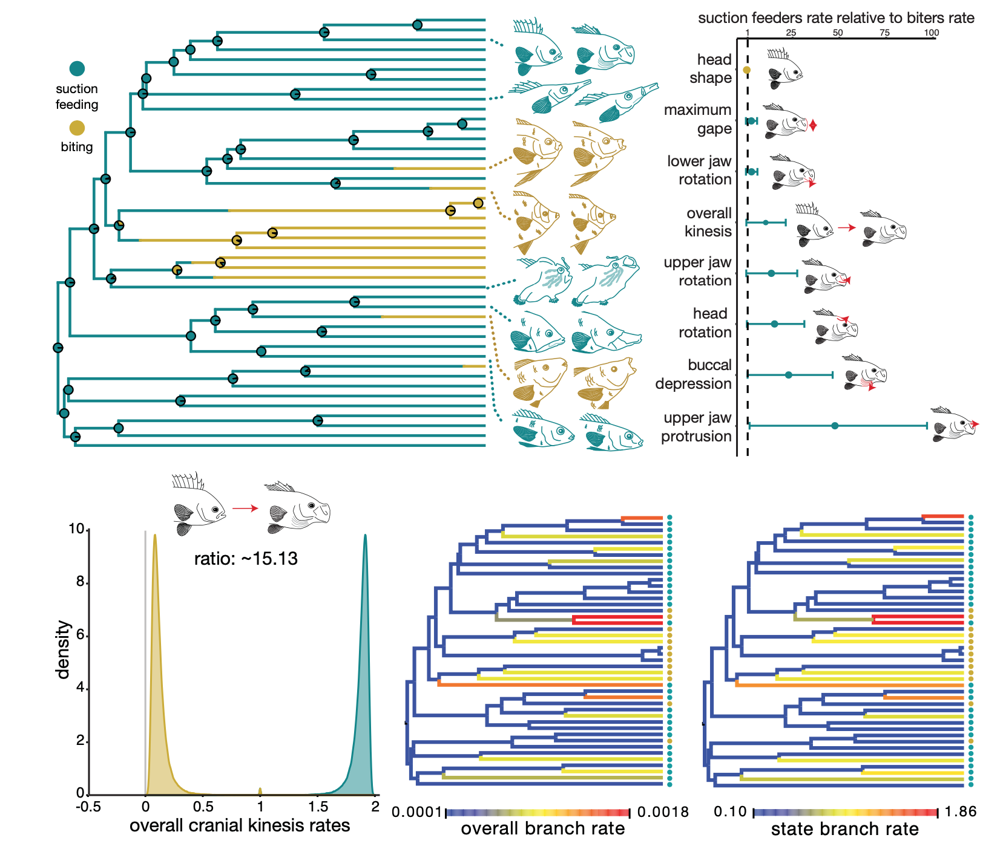

I received my PhD in 2022 from UC Davis in the Wainwright Lab . In the fall, I'll be starting as a postdoc at Virginia Tech in the Uyeda Lab . I’m a fish enthusiast, evolutionary biologist, and biomechanist. I study how, over millions of years, the different ways that animals capture their prey can result in different evolutionary patterns.
I received my PhD in 2022 from UC Davis in the Wainwright Lab . In the fall, I'll be starting as a postdoc at Virginia Tech in the Uyeda Lab . I’m a fish enthusiast, evolutionary biologist, and biomechanist. I study how, over millions of years, the different ways that animals capture their prey can result in different evolutionary patterns.
Specifically, I am interested in the relationship between functional morphology and macroevolution. My current research explores the role of feeding mode in promoting morphological and kinematic diversification, and the exceptional diversity of reef fishes. I integrate biomechanics, geometric morphometrics, and kinematic studies with phylogenetic comparative models of trait evolution. My past research at Friday Harbor Labs and Cornell University focused on shark tooth cutting performance and the relationship between size and burial performance in flatfishes. You can contact me at kacorn 'at' ucdavis 'dot' edu.
What is the evolutionary
history of biting?

Reefs are known for their diversity in many dimensions, but there is one form of marine fish diversity found almost exclusively on reefs: diversity in feeding mechanism. Modern teleost biters dominate reef fish assemblages and make up 40% of all reef fishes, but we found that the dominance of teleost biters on reefs is a recent phenomenon: in fact, at the K/Pg mass extinction, less than 2% of teleost lineages used biting. We leveraged the largest teleost reef fish body shape dataset and state-dependent, relaxed clock models of evolutionary rate to explore how feeding mode affects rate of evolution, finding that biters evolve body shapes 1.5x faster than suction feeders. Biting has been a major contributor to the morphological and ecological diversity of reef fishes in just the last 60 million years.
How do trade-offs mediate evolution of
morphology and kinematics?

Trade-offs are an unavoidable part of life, but whether they constrain or promote the evolution of form and function is unclear. We compared the evolution of feeding motions and of head shape by fishes subject to a mechanical trade-off by using both suction and biting for prey capture and those that only use suction. We found that the trade-off promoted the evolution of morphology, which evolved faster in species experiencing a trade-off, but that it slowed the evolution of feeding kinemtics--in fact, fishes not under a trade-off evolved kinematics 13-fold faster than those under the trade-off. Not only do trade-offs between multiple functions affect species' traits, they also appear to be able to increase or decrease the rate at which species traverse phenotypic space. This work was published in Systematic Biology: check it out!
How does size affect
ability to burrow?

Burial is one of the most challenging modes of locomotion--more metabolically challenging than even flying! Flatfishes are able to bury by fluidizing the substrate and flicking sand over their bodies, but we do not know whether burial changes as fishes scale. We tested the effect of size on burial ability in flatfishes in a 2-part experiment: first, by holding substrate size constant, and scaling flatfishes from 5 - 35 cm; and secondly, by holding flatfish size constant, and scaling the particle size of the substrate. We found that though undulation kinematics change in differently sized flatfishes, all are able to achieve high coverage; but flatfishes are unable to change their burial kinematics to accommodate larger sized particles and cannot bury themselves in substrates with particles too large, suggesting that both fish size and particle size affect the ability of flatfishes to bury. This paper was published in Journal of Experimental Biology: check it out!
The tooth-prey interface and
the dulling of shark teeth
Traditional materials testing methods have revealed little effect of shark tooth shape on cutting performance, but the way that sharks bite their prey isn't like a traditional testing method: it is a rapid interaction, with shaking motions of the head to shear prey along the teeth at high speeds. We developed a dynamic testing apparatus by mounting shark teeth to the blades of a reciprocating saw mounted on a fulcrum to test cutting performance in shark teeth. We revealed differences among tooth shapes at biomimetic speeds, suggesting that the tooth-prey interface is a dynamic surface and biomimetic modeling can reveal diversity not present under other functional conditions. You can find our paper in Royal Society Open Science!